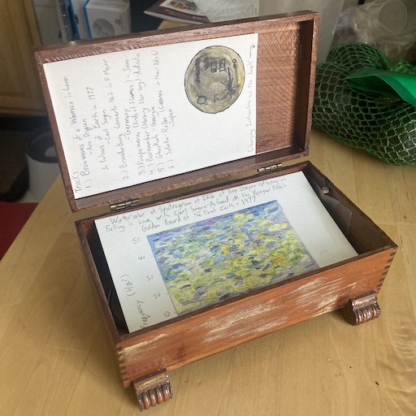

A Modern Music Box
There was a post on Hacker News about the coolest thing you have ever made.
There are a number of things that I have made that I am proud of but one of the best was a music box that I made as a gift for my then girlfriend (we are now engaged) the first Chirstmas we spent together.
Music boxes are nothing new, but the metal and wood variety is generally pretty limited in what it can play
My girlfriend has a tatoo of the pulsars on the Voyager Golden Record. If you are not familiar, the Voyager Space probe was equipped with a Golden Record which contains greetings from each of the member states of the UN, sounds of animals, nature, humans and music from a number of different cultures. There is something very hopeful in sending this cosmic message in a bottle out into space and the sound track does a great job representing the best things about us
Naturally I thought this would be a great gift. Initially, I had the idea that I might use some embedded procesor, and a switch and a speaker and so on. In the process I found that audio greeting cards are a thing that can be purchased for less than $10 can come with a battery a speaker, a solar sensor to detect opening, computer to connect all this and a tiny bit of memory to store a playlist
I bought one of these as well as a wooden box to store it in. I sanded, stained and varnished the wooden box to restore its finish. Since the music player attaches to a card, I decided to add a personal touch by including using a water color of the spectrogram of an EEG recordings from Ann Druyan thinking about falling in love with Carl Sagan. This is one of the stranger pieces of the voyage record (having worked with EEG data before I doubt aliens would be able to make sense of this one), but it fits nicely with the theme.
Finally. The memory of the music player on the greeting card was a too small to fit the whole voyager record. I used ffmpeg to shrink things down by converting to mono and reducing the bitdepth:
ffmpeg -i in.mp3 -ac 1 -b:a 96k -map a out.mp3
Convert to mono,
The project came together in time for Christmas, and the results were great. Unfortunately my girlfriend got with with the Omicron Covid Surge, so Christmas was cancelled. This musicbox took on a different meaning as the sound track for a quarantine, but that is a different story.